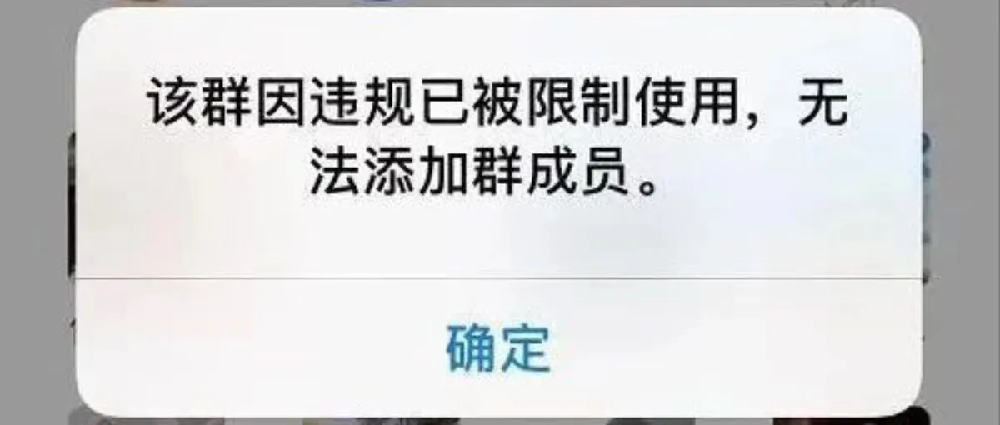
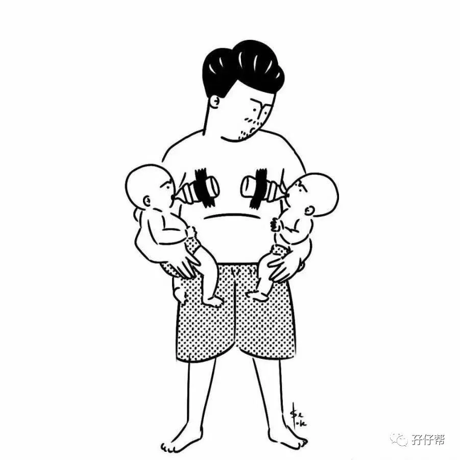
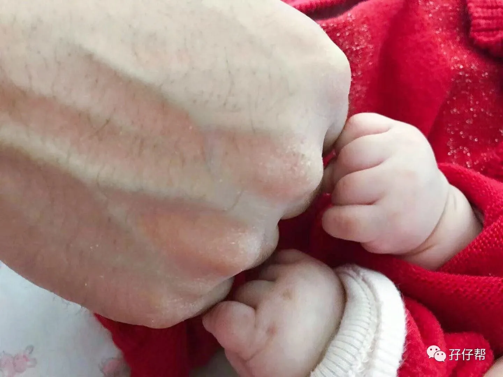

【帮主】圆圈妈妈：
这篇推文有感而发，起因是就在昨天举国同吃火鸡，感谢天感谢地的感恩节，我最喜爱的双胞胎爸爸群被封了！
【01】
2018年9月26日，孖仔帮双胞胎爸爸群正式启动！我很期待！
2019年11月28日，孖仔帮爸爸群被封了！我很难过！
想当年，冒着被母婴自媒体同行群嘲的风险，我建立了双胞胎爸爸群！妈妈群内经常一起唠嗑的姑娘们也劝我别折腾，我一个宝妈建爸爸群来干嘛？
似乎所有人都在看热闹，一群大老爷们究竟能聊个啥子？
事实上，一年过去了，一群大老爷们真的聊出了很多啥子！
于爸爸们而言，爸爸群是一个温馨的树洞，是一个放心吐槽，宣泄的地方！
聊孕产，聊育儿，聊车，聊房子，聊家庭琐事…
哥聊的是心情！谈的是情怀！说的都是养育双胞胎那些泪和累！
记得有一位宝爸的入群方式是这样的！他说：
虽然现在双胞胎是随处可见了，可是我和老婆身边却没有这样的同道中人，许多预产经验和养育之道都没地儿说。
跟朋友们说起养育双胞胎那些槽点，痛点，尿点，对方只会“嗯，哦，啊，呵呵”，讲到很多笑点时，我笑到牙齿掉了一地，对方还一脸懵逼！
“TM，这么好笑，你怎么不笑啊！？”
在爸爸群，你完全不用担心没人陪你尬聊，没人陪你傻笑！
试试看，凌晨一两点，你只要发一张图，所有人都会秒懂，都会纷纷跟帖，比如下图！
若不是大家都惺惺相惜，患难与共 ，此刻手上都抱着两个嗷嗷待哺的娃，谁大晚上不睡觉有那闲情陪你斗图！
许多宝爸甚至在闲聊中聊出了感情（妈妈们，别误会，是兄弟情的“情”），哪天那个哥不聊天了，那个弟不冒泡了，那位爷不说话了，大家都不习惯了！纷纷艾特“那谁，你可安好？”
对此，我非常欣慰，大家都把爸爸群真当一回事了，而且确实从中受益了！
还有！更让我意想不到的是...
爸爸群被封之后的24个小时，366位爸爸与组织处于失联状态，我的两个微信号都炸了，不断收到爸爸们的私信，询问为何群会被封，啥时候解封，要不要建新群...
什么时候，爸爸群那么重要了，重要到已经成为了我们每天生活的一部分，失去了它，觉得少了什么，没了寄托，心里空荡荡的！
于妈妈们而言，这是培养一个全能“战斗鸡”式宝爸进阶必入的群。
爸爸群成立后，许多妈妈们发来贺电：
自从队友去了爸爸群，每次都会陪去产检，总是抓着医生问这问那，还冒出很多医学专业术语，招来医生一阵阵白眼！
自从队友去了爸爸群，冲奶粉的速度加快了不少！哄娃的功夫进步了许多！
自从队友去了爸爸群，亲妈和媳妇同时掉下水这种历史遗留问题，居然开窍了！
自从队友去了爸爸群，我的口红色号与日俱增..
...
于我而言，12个双胞胎育儿社群，我最喜欢的是爸爸群！
爸爸群有很多正能量的信息，是我创作的灵感。
爸爸群有很多高质量的育儿知识，是我创作的素材。
爸爸群有很多高精尖的讯息，是我创作的源泉。
爸爸群有很多经典的励志语，是我创作的动力。
更重要的是，认识到一群可爱的爸爸们，让我更加确定爸爸不是育儿界的搅屎棍，让我更加有信心输出更多关于双胎奶爸当自强的事迹去证明：爸爸，这种生物，必要时刻，值得托付！
多少个月黑风高挑灯码字的深夜里，每当看到爸爸群里有宝爸开始发喂奶卡的图片，就想笑！
大家快来看呐！一大波喂夜奶的宝爸们正在直播中！
如今群被封了，再也见不到那个睡眼惺忪顶着黑眼圈带着粉色发卡的小兔子在滴喂奶卡了！
再见双胞胎爸爸群，
封了就封了吧！
咱东山再起，再建一个！
【02】
首先说说被封群的原因，希望引以为戒！
但直到现在，我也没搞懂为啥会被封群，查看了近期的聊天记录，唯一可疑的是前几天讨论HK问题，群里的确是为此泛起阵阵涟漪，我只当是一群爱国青年宝爸们在施展爱国主义情怀！
也许真的是触碰到了敏感话题，被举报，被封群了！
不管怎样，这里需要检讨下，我作为群主，只知道防火防盗防广告（还有抢红包），却没有严格规范过群组讨论的内容。
今日群被封，作为群主难辞其咎！
所以将功补过，重建双胞胎爸爸群！
（好了，终于讲到重点了！）
新群方案
双胞胎爸爸群将会被分成
孕中准爸群和已生奶爸群
群成员限200人！
入群条件
宝爸+家有双胞胎（不建议宝妈入群）
入群步骤
第一，由群主初步审核身份，
第二，入群后，第一时间改群昵称，群昵称格式如下：
圆圈201507双子深圳（已出生）
圆圈202007单绒双羊北京（在孕中）
第三，新成员入群自我介绍，格式如下：
家有龙凤胎奶爸一枚，坐标深圳（已出生）
双绒双羊准爸爸一枚，坐标北京（在孕中）
第四，让红包飞出来！金额随意，看老板心情！
注意：此处请所有老成员监督新成员必须完成入群三部曲：改昵称，自我介绍，发红包，但不宜有任何“调戏”新入群成员的戏码！违者发红包补偿精神损失费！
群主题
双胞胎育儿为准，家庭工作生活为辅。
禁谈政治，宗教，国事等可能会导致封群的各类敏感话题，包括但不限于文字，图片，视频，帖子等。
禁黄赌毒！！！
如何入群
请＋twinsbang1，备注“双胞胎爸爸不是搅屎棍”，通过好友后，请提供以下基本信息： 宝妈还是宝爸？坐标？孕中还是已生？绒毛膜性？孕产期？俩娃性别年龄？为何入群？
其他事宜
发错拼多多，游戏分享等广告链接，视情节而定，轻则给予黄牌警告，严重的直接踢。
...
是否有补充呢？
欢迎下方留言，为建立一个全新的高逼格正能量的爸爸群，宝爸们赶紧来出谋划策吧！
🔼来自双胞胎爸爸群一宝爸的晒图🔼
哦，欢迎妈妈们也来说几句，麦克风在此！有请！
-END-
今日互动话题
#你对双胞胎妈妈群和爸爸群有什么建议吗？#
评论区聊一聊呗！
一关注孖仔帮一


